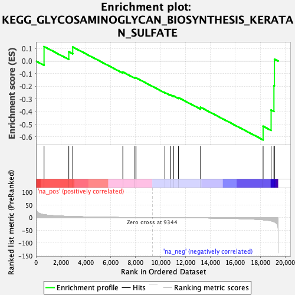
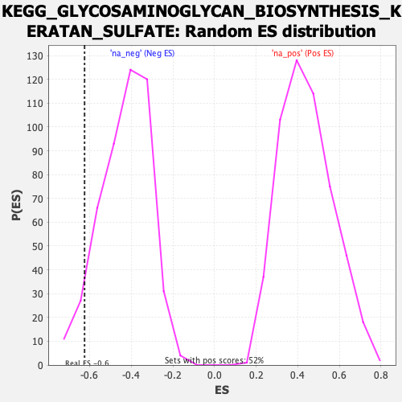

| | | Dataset | DE_genes |
| Phenotype | NoPhenotypeAvailable |
| Upregulated in class | na_neg |
| GeneSet | KEGG_GLYCOSAMINOGLYCAN_BIOSYNTHESIS_KERATAN_SULFATE |
| Enrichment Score (ES) | -0.6243024 |
| Normalized Enrichment Score (NES) | -1.4550772 |
| Nominal p-value | 0.05462185 |
| FDR q-value | 0.18771292 |
| FWER p-Value | 0.947 |
Table: GSEA Results Summary

Fig 1: Enrichment plot: KEGG_GLYCOSAMINOGLYCAN_BIOSYNTHESIS_KERATAN_SULFATE
Profile of the Running ES Score & Positions of GeneSet Members on the Rank Ordered List

Fig 2: KEGG_GLYCOSAMINOGLYCAN_BIOSYNTHESIS_KERATAN_SULFATE: Random ES distribution
Gene set null distribution of ES for KEGG_GLYCOSAMINOGLYCAN_BIOSYNTHESIS_KERATAN_SULFATE